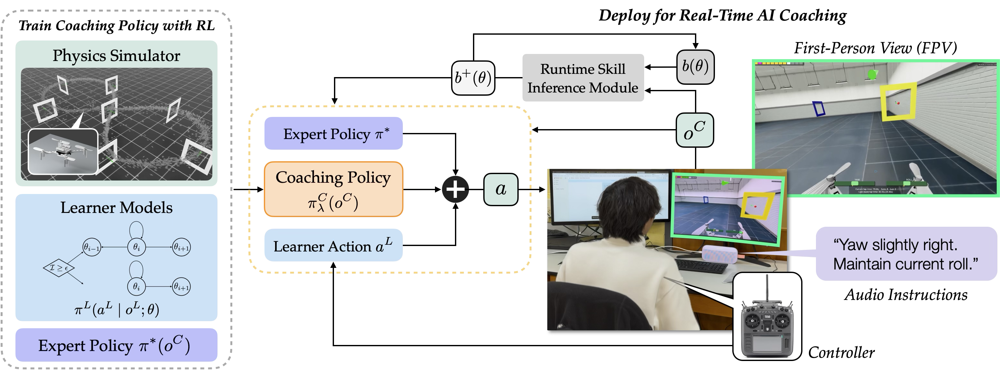
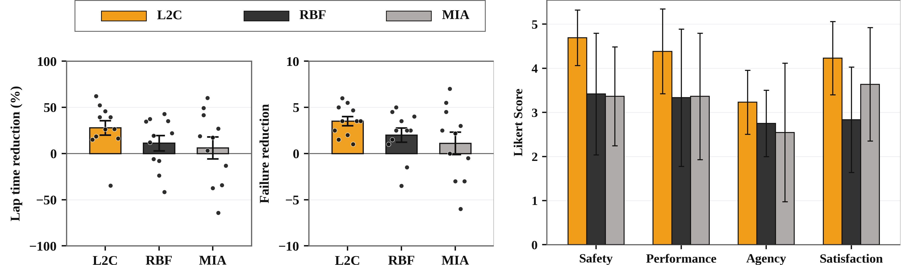
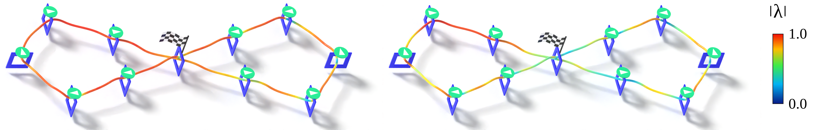
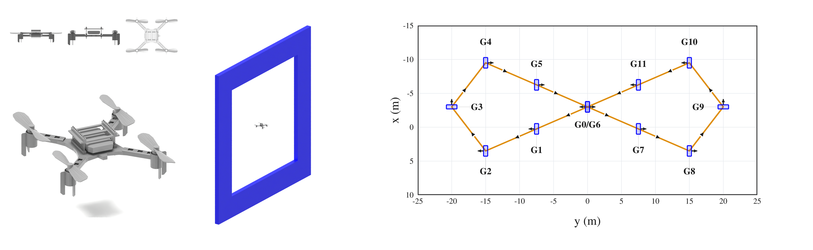
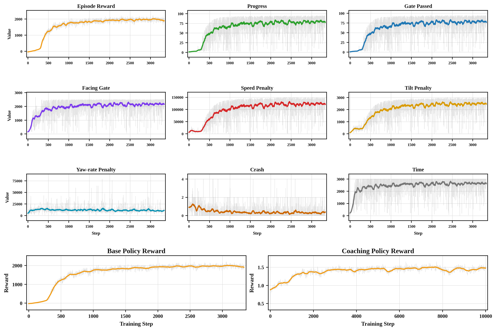

AI Coaching for Accelerating Human Skill Development with Reinforcement Learning
AI copilots are often designed to help people perform better right now. However, if the AI takes over too much, the human may become dependent on it and fail to develop their own skill. This paper asks a different question: can an AI system act as a coach rather than just an assistant? We study adaptive shared-control policies that change assistance based on the learner and the task context, with the goal of building human skill that persists after the AI assistance is removed.
Overview Video
This presentation gives a high-level walkthrough of the paper: motivation, formulation, method, and user-study results.
Formulation
Formally, we cast the AI coaching problem as a two-player POSG, which we refer to as a Human--AI Coaching Game. Coaching is fundamentally a non-cooperative game where the human and AI have different objectives: the learner seeks to maximize task performance, while the coach optimizes a pedagogical objective, namely the learner's independent competence.
A Human--AI Coaching Game is defined by the tuple \[ \mathcal{G} = \bigl(\mathcal{S},\mathcal{A},P, \Theta,\mathcal{O}^{\mathrm{H}},\mathcal{O}^{\mathrm{AI}}, O^{\mathrm{H}},O^{\mathrm{AI}},r^{\mathrm{H}},r^{\mathrm{AI}},p_0,\gamma\bigr). \] Here, \(\mathcal{S}\) is the set of physical states, \(\mathcal{A}\) is the action set shared by the learner and coach, and \(\Theta\subset[0,1]\) is a finite, totally ordered set of latent skill levels.
The joint transition captures how the physical states evolve and how the coach's actions causally influence the learner's skill progression:
\[ P(s', \theta' \mid s, \theta, a^{\mathrm{H}}, {\color{#990000}{a^{\mathrm{AI}}}}). \]The learner's objective is a task reward collected under the combined effect of their own actions and the coach's intervention:
\[ r^{\mathrm{H}}(s_t, a^{\mathrm{H}}_t, {\color{#990000}{a^{\mathrm{AI}}_t}}) = r^{\mathrm{task}}(s_t, a_t). \]The coach, however, is graded on a different, pedagogical exam: not how well the learner performs now with help, but how well they will perform later without it. We define this as the Value of Independence:
\[ {\color{#990000}{r^{\mathrm{AI}}(s_t; \theta_t)}} = {\color{#990000}{ \mathbb{E}\!\left[ \sum_{k=0}^{\infty} \gamma^k\, r^{\mathrm{task}}(s_{t+k},\, a^{\mathrm{H}}_{t+k}) \;\middle|\; \begin{array}{l} a^{\mathrm{H}}_{t+k} \sim \pi^{\mathrm{H}}(\cdot \mid o^{\mathrm{H}}_{t+k}; \theta_{t+k}), \\[2pt] j_{t+k+1} \sim P(\cdot \mid j_{t+k}, a^{\mathrm{H}}_{t+k}, a^{\mathrm{AI}}_{t+k}=0) \end{array} \right]}} \]Intuitively, VoI asks: if the coach were to walk away right now, how well would the learner perform? The AI coach implements shared control by fusing the learner's action with an expert baseline via the paper's linear blending rule:
\[ a = \lambda \odot \pi^*(o^{\mathrm{AI}}) + (\mathbf{1}-\lambda) \odot a^{\mathrm{H}}, \]where \(\lambda = \pi^{\mathrm{AI}}_{\lambda}(o^{\mathrm{AI}}) \in [0,1]^{\dim(\mathcal{A})}\) is a per-axis blending vector that modulates the coach's assistance level, from 0 (no assistance) to 1 (full override).
Method
To train a coaching policy, we augment the robot's transition dynamics with two learner-side components: a skill-conditioned control policy, and a model of how the learner's latent skill evolves in response to coaching events such as successful or failed task attempts.
At deployment, the coach maintains a belief over learner skill and uses the learned blending policy to combine the learner command with the expert action, allowing the system to scaffold or step back according to the learner and task context.

Experimental Results
We conducted a user study with \(N=33\) participants from diverse drone-flying backgrounds in a high-fidelity FPV drone racing simulator. Each participant was randomly assigned to one of three AI coaches: L2C and two baselines, RBF and MIA. We measure human skill change with two metrics: lap time and failure count.
For L2C, a paired-samples t-test comparing pre- and post-coaching lap times yielded a mean reduction of \(27.9\%\) with \(p=0.005\) and Cohen's \(d_z=-1.08\). Similarly, a paired t-test on per-lap failure count yielded a mean reduction of 3.52 failures per lap with \(p \lt 0.001\) and Cohen's \(d_z=-2.13\).
For RBF, paired tests showed no reliable change in lap time, but the paired test on failure count showed significance. For MIA, paired tests showed no reliable change in lap time or failure count. All four between-method contrasts favor L2C with medium-to-large effect sizes.

Pre- and Post-Coaching Trajectories
The objective metrics show that L2C achieves larger reductions in lap time and failure count than both baselines. This figure provides qualitative examples of how human trajectories change after coaching, complementing aggregate metrics by showing the spatial structure of the laps.

Assistance Adaptation
We inspect how L2C changes assistance based on the estimated learner skill and physical context. The magnitude of the blending vector along example trajectories shows two emerging forms of adaptation: across learners, a novice receives more assistance than a more skilled learner; within each trajectory, \(|\lambda|\) varies sharply around the gates, the task-critical states that determine whether the learner collides or passes successfully.

Simulation Environment
We structure each trial into three phases: a pre- and post-coaching test, and a main coached training session. To prevent participant fatigue, we limit the training session to 15 laps and restrict the human's control authority to yaw and roll rate while automating the pitch rate and thrust.
The simulated racing environment consists of 12 gates in a figure-eight layout, with two gates spatially overlapping at the central crossing. Participants are instructed to fly through the gates in the prescribed order, completing the course as quickly as possible.

Policy Training
We train both a base racing policy and an L2C coaching policy with PPO. The base policy is trained for racing performance, while the coaching policy is trained with a skill-improvement objective so that it optimizes long-term independent competence rather than only immediate assisted task completion.
The reward curves report the base racing policy and coach policy training runs used to produce the deployed policies. The auxiliary reward terms encourage a stable gate-facing flight style, making the resulting trajectories more suitable for human learners to imitate.

BibTeX
TODO: BibTeX will be added after the paper metadata is finalized.
@article{TODO,
title = {TODO},
author = {TODO},
year = {TODO}
}